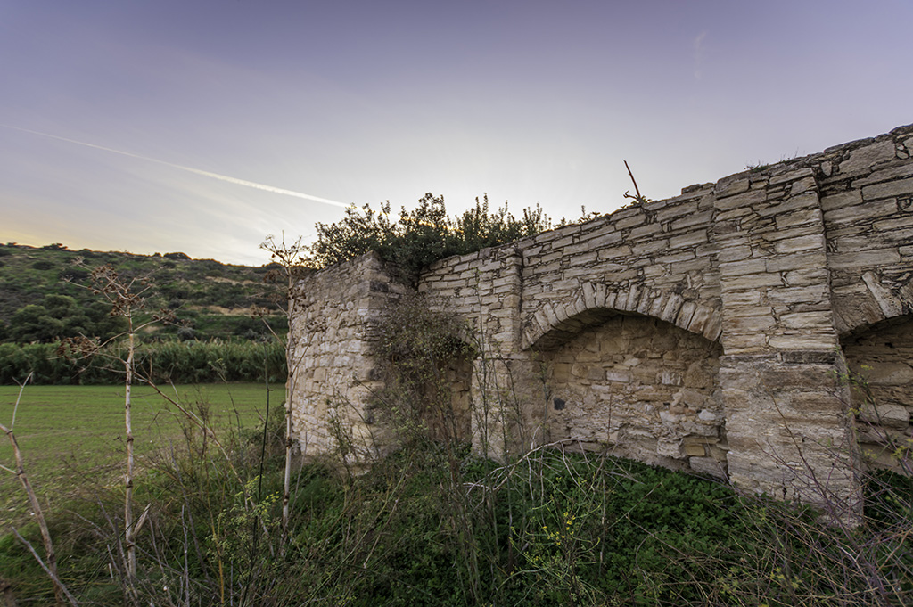
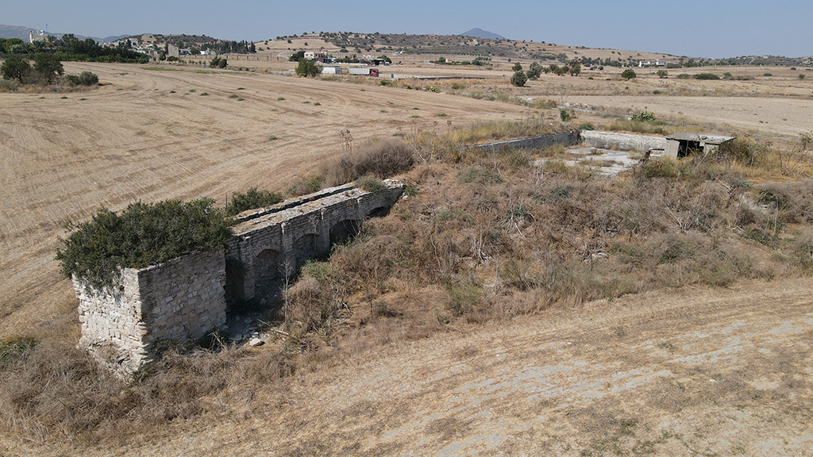

Rivers have always played a critical role in shaping human landscapes from prehistory to modern
times. In the Xeros valley, villages, hamlets, agricultural installations and workshops were
established along the river. Communities made use of the river water for their survival,
stability and growth.
The remains of the watermill of Alaminos lie 430 metres southeast of the late medieval
free-standing tower-house. The watermill was probably built in the Late Middle Ages (15th-16th
centuries), while the supporting arches seem to have been restored or rebuilt in the Late
Ottoman era (first half of the 19th century). The ruins, overgrown with vegetation, are a
picturesque sight in the landscape, close to the dense bamboo trees along the banks of the Xeros
River.
Τα ποτάμια διαδραμάτιζαν ουσιαστικό ρόλο στη διαμόρφωση των ανθρώπινων τοπίων διαχρονικά. Στην
κοιλάδα του Ξερού, ιδρύθηκαν μεγάλα χωριά, μικροί αγροτικοί οικισμοί και εργαστήρια κατά μήκος
του ποταμού από τους προϊστορικούς χρόνους μέχρι σήμερα. Με αυτόν τον τρόπο, οι κοινότητες
εκμεταλλεύονταν την ύπαρξη του νερού για την επιβίωση και ανάπτυξη τους.
Τα κατάλοιπα του νερόμυλου της Αλαμινού βρίσκονται 430 μέτρα νοτιοανατολικά του μεσαιωνικού
πύργου. Ο νερόμυλος κτίστηκε πιθανώς στην περίοδο του ύστερου Μεσαίωνα (15ος-16ος αιώνας), ενώ
οι καμάρες στήριξης του μυλαύλακου δέχτηκαν επεμβάσεις αποκατάστασης μάλλον κατά τους ύστερους
οθωμανικούς χρόνους (πρώτο μισό 19ου αιώνα). Τα κατάλοιπα, κατάφυτα από άγρια βλάστηση,
αποτελούν ένα ρομαντικό θέαμα στο σύγχρονο τοπίο, δίπλα στους πυκνούς καλαμιώνες στις όχθες του
Ξερού.
Nehirler, tarih öncesinden modern zamanlara kadar insan manzaralarının şekillendirilmesinde her
zaman kritik bir rol oynamıştır. Kseros vadisinde nehir boyunca köyler, mezralar, tarım
tesisleri ve imalathaneler kuruldu. Topluluklar hayatta kalmaları, istikrarları ve büyümeleri
için nehir suyundan yararlandılar.
Alaminos su değirmeninin kalıntıları, orta çağdan kalma bağımsız kule-evinin 430 metre
güneydoğusundadır. Su değirmeni muhtemelen Geç Orta Çağ'da (15-16. Yüzyıllar) inşa edilmişken,
destek kemerleri Geç Osmanlı döneminde (19. yüzyılın ilk yarısı) restore edilmiş veya yeniden
inşa edilmiş görünmektedir. Kseros Nehri’nin kıyısındaki yoğun sazlıkların yakınında bitki
örtüsüyle kaplanmış kalıntılar romantik bir manzara oluşmaktadır.
The watermill was used for grinding grains. It comprises a representative example of industrial
architecture and rural archaeology of post-medieval Cyprus. Watermills are structures that use
hydropower to drive the mechanical process of milling or grinding, necessary for the production
of material goods, such as flour or sugar.
The structure that dominates the landscape today is the channel of the watermill supported by a
series of four arches that are connected with the tower and its pit towards the river, and the
water-tank on the opposite end. The wheel, the grindstones and other elements of its grinding
mechanism no longer survive. The surviving elements of the watermill of Alaminos suggest that it
was probably of the horizontal-wheel type. Existing examples of other watermills on the island
suggest that the water-wheel and the millstones were once operating for grinding cereals.
To understand the function of the mill, we suggest that you walk to the large water-tank first
(to the direction of the dirt-road) and then make your way back to the arched structure.
Ο νερόμυλος χρησιμοποιόταν για το άλεσμα σιτηρών. Αποτελεί αντιπροσωπευτικό δείγμα βιομηχανικής αρχιτεκτονικής και αρχαιολογίας του τοπίου της μεσαιωνικής Κύπρου. Οι νερόμυλοι είναι κατασκευές που χρησιμοποιούν υδροδύναμη για τη λειτουργία του μηχανισμού της άλεσης, αναγκαία για την επεξεργασία της πρώτης ύλης και την παραγωγή προϊόντων όπως το αλεύρι και η ζάχαρη. Το οικοδόμημα με τα 4 τυφλά τόξα που δεσπόζει στο γύρω χώρο σήμερα στηρίζει το μυλαύλακο. Το μυλαύλακο (το αυλάκι που μεταφέρει το νερό στο μηχανισμό του νερόμυλου) συνδέεται με τον πύργο (που περιλάμβανε τον λάκκο και τη χοάνη) στη μία άκρη πρoς την πλευρά του ποταμού, και τη μεγάλη δεξαμενή νερού στην άλλη. Ο τροχός ή φτερωτή, οι μυλόπετρες και τα υπόλοιπα μέρη του μηχανισμού άλεσης δε σώζονται. Ο νερόμυλος πρέπει να είχε οριζόντιο τροχό, όπως υποδηλώνουν τα σωζόμενα μέρη του. Παραδείγματα από αντίστοιχους νερόμυλους στην Κύπρο δείχνουν ότι ο τροχός και οι μυλόπετρες λειτουργούσαν για το άλεσμα δημητριακών. Για να κατανοήσετε τη λειτουργία του νερόμυλου θα πρέπει να περπατήσετε πρώτα προς τη δεξαμενή νερού και από εκεί να επιστρέψετε στο τοξωτό οικοδόμημα με το μυλαύλακο και τον πύργο.
Su değirmeni, tahılları öğütmek için kullanıldı. Orta Çağ sonrası Kıbrıs'ın endüstriyel mimari ve kırsal arkeolojisinin temsili bir örneğini teşkil etmektedir. Su değirmenleri, un veya şeker gibi ürünlerin üretimi için gerekli olan öğütme mekanizmasının işlevini yürütmek için hidroelektrik kullanan yapılardır.
Walking northeast, where the top of the arched structure meets the ground surface, you will find the rectangular stone-built water-tank, which is one of the largest known in Cyprus. A furrow channelled the water from the river to the water-tank. The water was used for setting the watermill in motion or for irrigation. Southwest of the water-tank you can see the channel that connected the tank with the rectangular water-tower, standing to a height of more than 4 metres. A tube or penstock was connected to the bottom of the tower to throw the water on the water-wheel. The tower dropped the water with force to set the water-wheel in motion.
Περπατώντας βορειοανατολικά προς το χωματόδρομο, θα συναντήσετε την ορθογώνια λίθινη δεξαμενή, μία από τις μεγαλύτερες στην Κύπρο. Το νερό διοχετευόταν από τον πόταμο στη δεξαμενή μέσω ενός αυλακιού. Το νερό χρησιμοποιόταν για να θέσει το μύλο σε λειτουργία ή για άρδευση. Η νεραύλακα ξεκινά νοτιοδυτικά της δεξαμενής και συνδέεται με τον πύργο νερού, που έχει περίπου 4 μέτρα ύψος. Η χοάνη βρισκόταν στο κάτω μέρος του πύργου για να ρίχνει το νερό στον τροχό με δύναμη, θέτοντάς τον σε κίνηση.
Bugün manzaraya hâkim olan 4 kör kemerli bina bugün değirmeni destekliyor. Değirmen evleği (su değirmeni mekanizmasına su taşıyan evlek) nehrin bir ucundaki kuleye (çukur ve tahıl abarını içeren) ve diğer ucundaki büyük su deposuna bağlanır. Tekerlek, bileme taşları ve taşlama mekanizmasının diğer unsurları artık hayatta kalmamaktadır. Alaminos su değirmeninin hayatta kalan unsurları, onun muhtemelen yatay tekerlek tipi olduğunu göstermektedir. Adadaki diğer su değirmenlerinin mevcut örnekleri, su çarkının ve değirmen taşlarının bir zamanlar tahıl öğütmek için çalıştığını göstermektedir.
The watermill played an important role in the social and economic life of the community of Alaminos. The owner of the land on which it was built was probably a wealthy landowner. The mill served the community of Alaminos and surrounding villages, such as Kophinou, Menogeia, Anaphotida, Aglisides and Mazotos. The village of Alaminos held a significant position in the economy of the Xeros River valley during the Late Ottoman period thanks to its watermill, the only one in the region, which served to process the grains produced by the neighbouring village communities.
Ο νερόμυλος υπήρξε ιδιαίτερα σημαντικός για την κοινωνική και οικονομική ζωή της κοινότητας της Αλαμινού. Ο ιδιοκτήτης της γης στην οποία βρίσκεται ο νερόμυλος ήταν ενδεχομένως κάποιος εύπορος γαιοκτήμονας της περιοχής. Ο μύλος εξυπηρετούσε την κοινότητα της Αλαμινού και άλλα γειτονικά χωριά, όπως η Κοφίνου, η Μενόγεια, η Αναφωτίδα, οι Αγγλισίδες και ο Μαζωτός. Η Αλαμινός κατείχε ξεχωριστή θέση στην οικονομία της κοιλάδας του Ξερού κατά την ύστερη οθωμανική περίοδο λόγω του ότι το χωριό διέθετε το μοναδικό νερόμυλο στην περιοχή, εξυπηρετώντας το άλεσμα των σιτηρών που παράγονταν από όλες τις γειτονικές κοινότητες.
Değirmenin işlevini anlamak için önce büyük su deposuna (toprak yol yönünde) yürümenizi ve ardından kemerli yapıya geri dönmenizi öneririz.
Locals from Alaminos confirm that its use as an irrigation source for the community continued until twenty years ago, also testified to by the installation of a modern pumping station inside the water-tank. Christians and Muslims lived side-by-side in Alaminos from the Ottoman era to 1974. Greek-Cypriots occupied the quarter on the west bank of the Xeros, while the east was populated by Turkish-Cypriots. Locals recall that both communities respected the common need for access to water supplied through the furrow and burrows of the river. The Xeros River always brought the two communities together in their common struggle for survival.
Οι κάτοικοι του χωριού γνωστοποιούν ότι ο νερόμυλος χρησιμοποιόταν από την κοινότητα για άρδευση μέχρι πριν 20 χρόνια, γεγονός το οποίο επιβεβαιώνεται από την εγκατάσταση σύγχρονου μηχανισμού άρδευσης εντός της δεξαμενής νερού. Χριστιανοί και Μουσουλμάνοι έζησαν πλάι πλάι στην Αλαμινό από τους οθωμανικούς χρόνους μέχρι το 1974. Οι Ελληνοκύπριοι διέμεναν στη συνοικία της δυτικής όχθης του Ξερού, ενώ οι Τουρκοκύπριοι στην ανατολική. Οι ντόπιοι θυμούνται ότι οι δύο κοινότητες σέβονταν την κοινή τους ανάγκη για πρόσβαση στο νερό που έτρεχε στο αυλάκι και τα λαγούμια του ποταμού. Ο «Ξεροπόταμος» έφερνε πάντα κοντά τις δύο κοινότητες στον κοινό τους αγώνα για επιβίωση.
Kemerli yapının tepesinin zemin yüzeyiyle buluştuğu kuzeydoğuya doğru yürürken, Kıbrıs'ta bilinen en büyük dikdörtgen taştan yapılmış su depolarından biri olan su deposunu bulacaksınız. Nehirdeki su su tankına bir evlek içinden yönlendiriliyordu. Su, su değirmenini hareket ettirmek veya sulama yapmak için kullanıldı. Su tankının güneybatısında, tankı 4 metreden daha yüksek bir dikdörtgensel su kulesine bağlayan kanalı görebilirsiniz. Suyu su çarkına yönlendirmek için kulenin dibine bir tüp veya cebri boru bağlandı. Kule, su çarkını harekete geçirmek için suyu kuvvetle püskürtüyordu.
Su değirmeni, Alaminos topluluğunun sosyal ve ekonomik yaşamında önemli bir rol oynadı. Üzerine inşa edildiği arazinin sahibi muhtemelen zengin bir toprak sahibiydi. Değirmen Alaminos halkına ve Kofinuu, Menoya, Anafotida, Aglisides ve Mazotos gibi çevre köylere hizmet etti. Alaminos köyü, komşu köy toplulukları tarafından üretilen tahılların işlenmesine hizmet eden ve bölgede tek su değirmeni olan su değirmenin sayesinde Geç Osmanlı döneminde Kseros Nehri vadisinin ekonomisinde önemli bir konuma sahipti. Alaminos sakinleri su değirmenin topluluk için bir sulama kaynağı olarak kullanımının yirmi yıl öncesine kadar devam ettiğini doğruladı. Su deposunun içine modern bir pompalama istasyonunun kurulması da bunu doğrulmaktadır. Osmanlı döneminden 1974 yılına kadar Alaminos'ta Hıristiyanlar ve Müslümanlar yan yana yaşadılar. Kıbrıslı Rumlar, Kseros'un batı yakasındaki mahallede ikamet ederken, Kıbrıslı Türkler doğu yakasında yaşıyordu. Yerel halk, her iki toplumun da nehrin evleği ve oyuklarından sağlanan suya erişim için ortak ihtiyaca saygı duyduğunu hatırlıyor. Kseros Nehri, iki topluluğu ortak hayatta kalma mücadelelerinde her zaman bir araya getirdi.
.